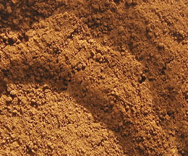

Les
terres jaunes
 Certains
auteurs signalent cependant que les terres rouges
auraient, selon eux, été utilisées bien avant les jaunes et les bruns (dont
les premières traces en Occident remontent "seulement" à 40 000 BC
environ, utilisés en peinture pariétale). La découverte du
procédé d'obtention des ocres rouges par chauffage des jaunes daterait
d'ailleurs de la même époque.
Certains
auteurs signalent cependant que les terres rouges
auraient, selon eux, été utilisées bien avant les jaunes et les bruns (dont
les premières traces en Occident remontent "seulement" à 40 000 BC
environ, utilisés en peinture pariétale). La découverte du
procédé d'obtention des ocres rouges par chauffage des jaunes daterait
d'ailleurs de la même époque.
Presque pur dans le jaune
de Mars (ou "oxyde de fer jaune"), le pouvoir colorant de
ce minéral est si grand qu'il peut même devenir encombrant. Il n'est
pas exagéré de le considérer comme un principe concentré, essentiel, et de
l'utiliser comme tel. Certains fabricants de couleurs ne s'y sont pas trompés
en proposant un jaune de Mars constitué d'oxyde de fer jaune + une charge.
La nature a fait à peu près le même travail en nous offrant des oxydes
chargés d'argile, de manganèse
et autres élément.
L'ocre
jaune
Mêlé naturellement à l'argile (voir silicate,
kaolin), l'oxyde de fer jaune devient le très
vénérable ocre jaune
(voir photo ci-dessous) et atteint une forme de perfection par son raffinement.
C'est sûrement l'un des pigments les plus remarquables tant par sa beauté que
pour sa stabilité dans les mélanges (il est compatible avec n'importe quel
pigment et la plupart des liants), sa neutralité chimique, sa permanence, son
pouvoir colorant, son pouvoir couvrant et son faible coût. Il est très
intéressant de décliner ses valeurs avec du blanc (il devient majestueux,
distingué et subtil) ou au contraire de le salir pour obtenir d'autres formes
chromatiques expressives, de le tester en mélange avec le bleu
outremer comme substitut de la
terre verte, etc. Attention : en mélange avec
des couleurs transparentes, il risque fort de dominer. Il vaut mieux utiliser de
petites quantités.

Les variétés les plus réputés de l'ocre jaune proviennent de l'Yonne et
d'autres régions de la moitié nord de la France. Certaines sources mentionnent
une appellation "JFLS" signifiant "jaune fine, lavée,
surfine" ("lavée" correspond au procédé de lévigation, voir ci-dessous)
et désignant un ocre jaune de bonne qualité - pas exhaustivement
car il existe de nombreux procédés et appellations comparable. L'industrie de
l'ocre et des terres évoque parfois les hauts artisanats locaux, leurs "AOC",
etc.
Lévigation
de l'ocre
Selon Kevin Mac Cloud,
le
lavage d'une terre
correspond à un procédé connu des Romains, nomme "lévigation",
correspondant à l'intitulé moderne de terre "lavée" (voir
ci-dessus).
Pendant trente minutes, un petit morceau de terre est mis à mariner dans trois
fois son volume d'eau, dans un récipient fermé. Le couvercle doit être
distant d'au moins trois centimètres du liquide.
Le mélange doit ensuite reposer quelques secondes avant d'être transvasé.
Les impuretés et même les gros morceaux argileux doivent être laissés au
fond du premier récipient. L'opération est répétée en augmentant à chaque
fois le temps de marinage.
A la fin, il reste à faire sécher le mélange et le broyer à la molette
- ou à l'aide d'un moulin, si on en dispose.
Il faut noter également que l'ocre est très souvent prélevé dans des sols
sableux, voire très sableux. Il faut donc extraire le sable qui, plus lourd que
l'ocre, se dépose au long de rigoles en pente douce. La matière délayée est
ensuite récupérée dans des bassins de décantation, puis séchée ou
traitée, comme indiqué ci-dessus, par lévigation, et broyée.
Ces opérations sont parfaitement réalisées par les artisans et les industriels. Elles ne
sont citées ici que pour mémoire.
Lire le texte consacré à la fabrication
"maison" de pigments à partir de terres naturelles.
Un
broyage un peu particulier
Contrairement à une rumeur délirante, il n'est pas du tout nécessaire de gaver ce pigment d'huile
(ni de tout autre liant) lors du broyage.
On remarque, lors de cette opération, la présence de morceaux vraiment
très durs, métalliques, sous la spatule, même quand le broyage est bien fin. Pas d'inquiétude :
c'est tout à fait normal. La palette sera un peu rayée mais la spatule n'en sera que mieux affûtée.
C'est vrai : l'ocre jaune a cette particularité d'affûter grandement les
spatules. Gare aux coupures !
Même en tube, cette couleur aurait, selon les témoignages recueillis, la
même tendance. Cela ne doit en aucun cas faire douter le peintre de l'intérêt
de ce pigment indispensable et irremplaçable.
Autres
terres jaunes
La terre de Sienne naturelle, également chargée d'oxyde de fer jaune, est traitée dans la page
réservée aux deux terres de Sienne.
La terre d'Italie lui ressemble un peu.
Il existe de très nombreuses variétés de terres jaunes provenant d'Italie,
de France, d'Amérique, et plus tellement du Royaume Uni (jaune anglais) où l'ocre
d'Oxford, qui a connu son heure de gloire, n'est plus extrait depuis longtemps.
Selon les cas, elles contiennent plus ou moins d'argile,
de l'oxyde de fer évidemment et d'autres composants.
Les grés du type "ocre de Puisaye" sont surtout utilisées en
poterie et arts du feu. Voir Oxydes.
Divers
Aucune toxicité précise ne semble caractériser ces pigments. Cependant, étant
donné la variété de leurs compositions, une certaine prudence pourrait être
utile en cas d'emploi répétitif.
Leur emploi à fresque ne pose aucune problème : leur stabilité autorise
l'association avec des éléments alcalins. Ils résistent également aux
éléments acides et aux UV. Ils peuvent être utilisés pour colorer notamment le ciment,
le béton, le plâtre et le badigeon.
En mélange aux oxydes de fer rouges, ils donnent une sorte d'orangé
particulier.
Ils sont utilisés en sous-couche pour les dorures à cause de leur
affinité chromatique avec le métal précieux (diminuant ainsi la visibilité
des craquelures de la feuille d'or).
Retour
début de page